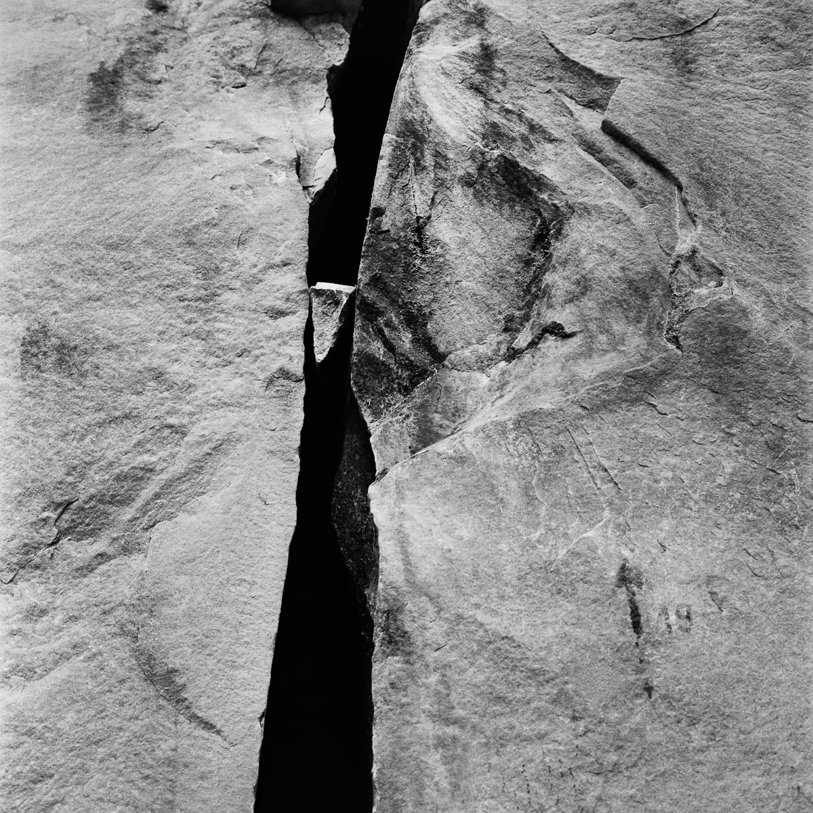
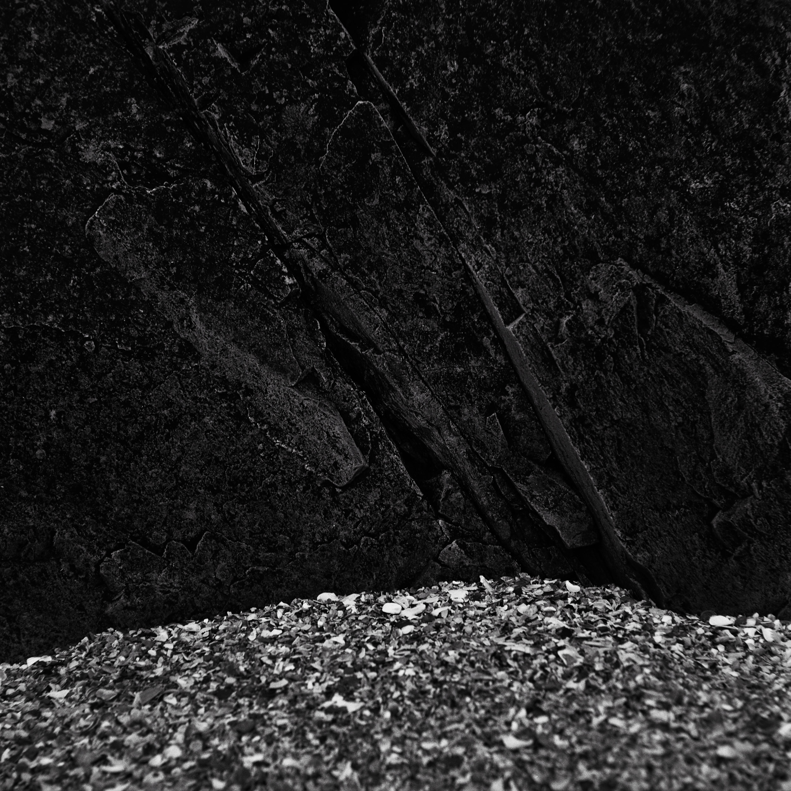
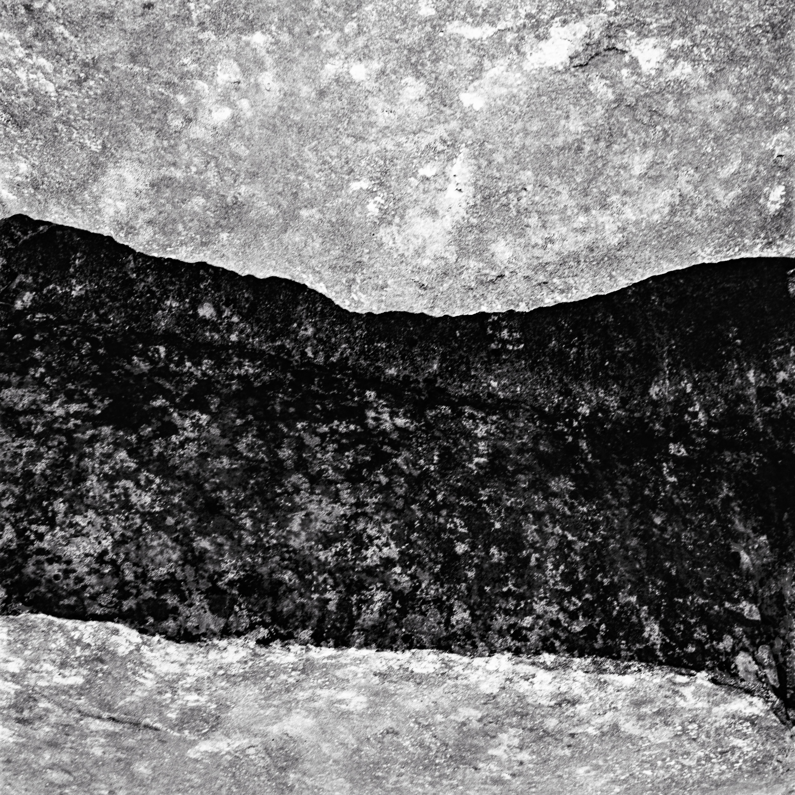
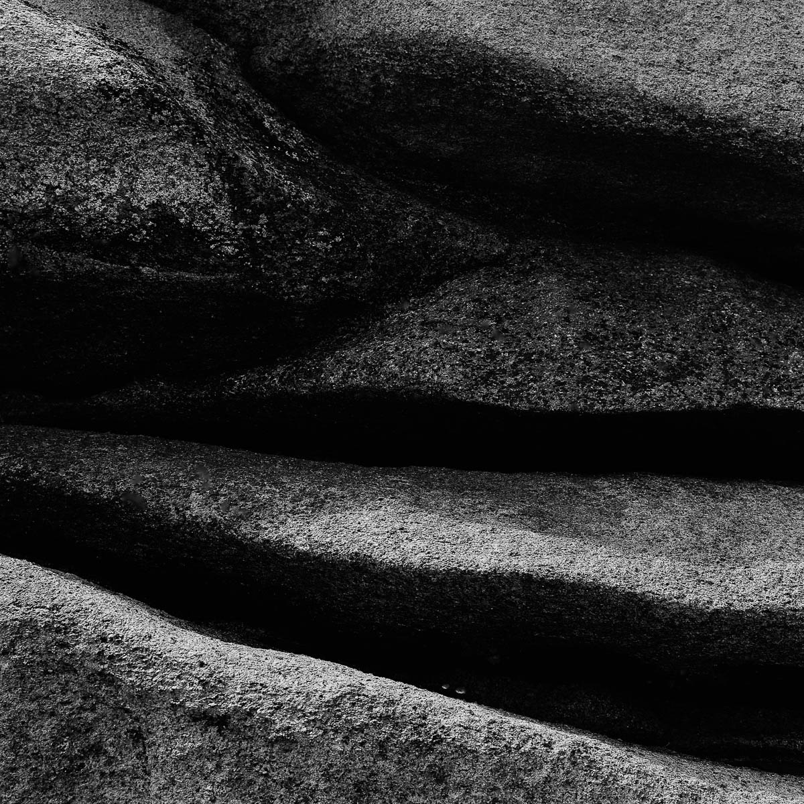

new
20/06/2025
Solid as a rock on Kodak Tmax 100
This photographic series, created over several years using black-and-white analog film, reflects a fascination with time and its traces. The granite cliffs of Northern Brittany, shaped by tides and winds over millennia, embody a quiet steadiness amidst the ever-changing world. Their intricate patterns and textures evoke a profound sense of permanence—a presence that predates us and will endure long after we are gone.
Making these images on analog black and white was crucial to me. I think it can really reveal the textures and all subtilities of the stone. Even more, it brings consitancy in my work as I’ve been able to use the same film for many years now. My choice for this project has been to use Kodak Tmax 100. It’s sharp, has great tonality and has always been my favorite film stock from the early 90’s.
This is a slow film. I use it at boxspeed and process it myself in Kodak Xtol. Xtol gives very nice results with Tmax in terms of speed and control over the highlights. This is true that porcessing this stock can be a bit delicate, especialy regarding highlights.
More about this series



